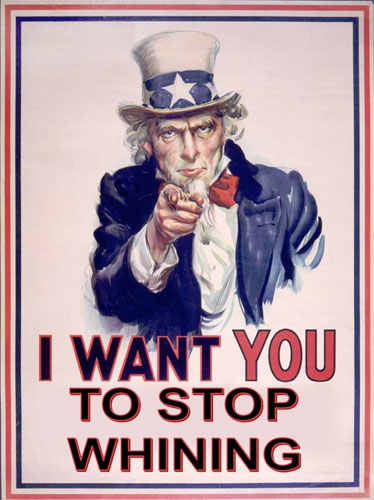

Developers: Stop Whining About IE6

I’m sick of the developer community whining and moaning about IE6. It’s amazing how many different campaigns have been created in an attempt to get people to upgrade. From the simple brochure sites like stopie6.com to the unethical IE6 update script which tricks a user into thinking an IE upgrade is a critical update. There was even a CNN story about the anti-IE campaign on the front page (which I think they ran mostly because they stood to benefit from people upgrading). And lets not forget the jovial tweets when news broke that YouTube would be dropping support for IE6.
The only major site that has a valid plan for leaving IE6 behind is Digg.com which was a business decision. According to their stats, IE6 accounts for 10% of visits and 5% of all pageviews. The biggest IE6 headaches for Digg is supporting the functionality to digg a story, bury a story, or leave a comment. IE6 only accounts for a mere 1% of these actions which Digg can’t justify the extra development time needed to support them for such a small group of users. They even conducted a survey to find out why people don’t upgrade their browsers with a majority of the respondents stating they aren’t allowed or they don’t have the proper rights to install new software on their computers.
All of this hoopla so the lives of developers are easier. After all it is the job of developers to build a site and make sure it works across a variety of operating systems, browsers, and devices in order to serve its audience. Martin Ringlein put it best in his post Stop being a dick, support IE6, “We are in the business of creating usable, accessible and intuitive experiences for our users; we are not in the business of changing users, user agents and user behavior all in a pursuit for what we’ve deemed a ‘better’ web.”
I became a developer because I enjoyed solving problems. Internet Explorer is just another obstacle to get over when solving a problem. Rather than wasting energy on things I couldn’t control like trying to persuade the public to upgrade, I dove into learning how to get past the quirks of IE. Here are my 5 tips:
- Start with a reset stylesheet – This removes any default styles set by the browser so you can start styling on a consistent base. I prefer Eric Myer’s CSS Reset Reloaded , but there are many to choose from.
- Use a strict HTML doctype – Doctypes tell the browser how to interpret the HTML and transitional and loose doctypes introduce rendering quirks known as triggering “quirksmode“. Any XML doctype (including XHTML flavors) triggers quirks mode in IE as well.
- Don’t be afraid of CSS conditional hacks – Did you know you can send IE a different property by putting an underscore in front of it? It works like this:
.style { margin-left:15px; //Caught by every browser _margin-left:10px; //Caught by IE 6 & 7 .margin-left:8px; //Only caught by IE6 }
You can also use conditional stylesheets to serve different stylesheets but that becomes difficult to maintain.
- Learn to love the AlphaImageLoader filter for transparent PNGs – There is no way around it.
- Learn to clear floats the simple way – Just set the “overflow” property of the container to auto or hidden and set the width or height to something other than auto. This applies to all browsers not just IE. I hate seeing the overly complicated clearfix solution.
Other tips for taming IE quirks:
- Definitive Guide to Taming the IE6 Beast – SixRevisions.com
- 10 Fixes for IE6 Problems – Sitepoint.com
So if studying up on these workarounds and techniques sound like too much work, then maybe you shouldn’t be a developer. Perhaps a professional lobbyist is right up your alley. They’re pretty good at ignoring the details of reality.
Here’s a list of some of the more prominent anti-IE6 sites:
- StopIE6.com
- IE6Update.com
- StopLivingInThePast.com
- SaveIE6.com (April Fools Joke)
- IEDeathMarch.org
- DearIE6.com
- IDroppedIE6.com
And David DeSandro agrees with my attitude towards IE6.